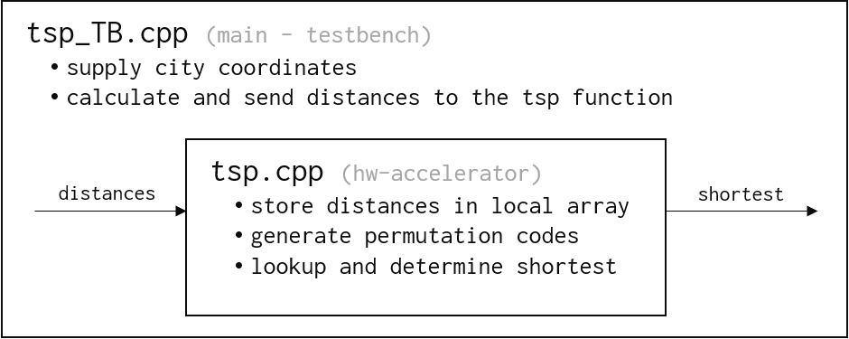
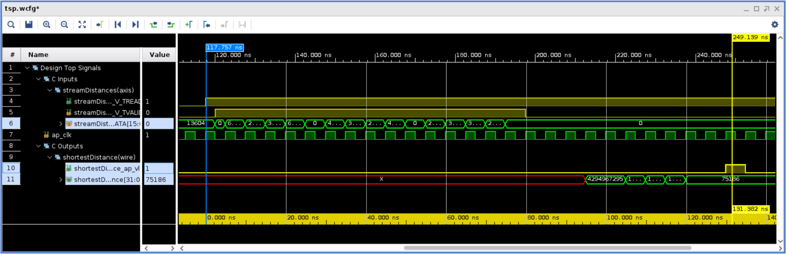

Vitis™ ハードウェア アクセラレーション チュートリアルxilinx.com の Vitis™ 開発環境を参照 |
このセクションの内容
フル デザイン構造 (テストベンチおよびアクセラレーション関数) と、適用されるコンパイラ ヒント (プラグマ) について説明します。
デザイン構造¶
サンプル デザインの構造は次のとおりです。
ハードウェア アクセラレーション最上位関数
tspには、2 つの仮引数 (入力距離と、見つかった最短距離に対する出力結果) があります。テストベンチ (main) は関数をラップし、距離データ ポイントを送信して結果を収集します。
図を次に示します。
tsp関数およびその仮引数 (AXI4-Stream に対するカスタマイズを含む):void tsp(hls::stream<uint16_t>& streamDistances, unsigned int& shortestDistance) { // defines our input as coming from an AXI-Stream via the INTERFACE pragma #pragma HLS INTERFACE axis port=streamDistances
概念的には、このアクセラレーション関数
tspは、特定の都市からその他の都市への一連の距離を受信します。ストリームを通して送信されるデータ ポイントの数は N (都市の数) x N です。入力は、hls::streamビルトイン ライブラリからの Vitis HLS stream として宣言され、INTERFACEプラグマによって AXI4-Stream に対してさらに特化されます。ストリーム経由でテストベンチによって送信されるデータの型は unsigned int (
uint16_t) で、テストベンチはこのハードウェア効率の高いデータ型に浮動小数点の距離を正規化します。// Normalizing distances to get the maximum precision on 16-bit integers uint16_t maxUint = std::numeric_limits<uint16_t>::max(); for ( int i = 0; i < N*N; ++i ) { cout << "Distance (fp32): " << distances[i] << " Norm. (uint16): " << (uint16_t)((distances[i]/maxDist) * maxUint); inputDistances.write((distances[i]/maxDist) * maxUint); }
距離はその後、専用の (大きい) メモリ ブロックではなく、デバイス ロジック エレメントにメモリ エレメントとしてインプリメントされる小さい内部配列に格納されます。たとえば 13 都市の場合、これは 16 ビット ワードとして表現した 13x13=169 個の距離、つまり合計 2,704 ビットになり、1 個のデバイス専用ブロック メモリ (BRAM の場合は 36,000 ビット) が保持できるものよりも大幅に少ないです。
オンチップ メモリを使用して実行するルックアップは高速であり、パフォーマンスをさらに向上させるためにチュートリアルの後の手順でこれを有効活用します。
すべての異なる置換 (permutation) を効率的な方法で生成することは非常に重要です。その理由は、都市数によって異なる経路のルックアップが数百万または数十億回も必要となることがあり、その場合は数が多すぎて事前に計算して格納できないからです。経路の置換はオンザフライで作成する必要があります。これはC++ の
next_permutation()関数で可能ですが、特定の置換の計算がその前の置換に依存している場合、この関数は本質的に並列実行するのが困難です。ここでは、階乗進法に基づいて異なる方法を使用します。
ループ インデックスを使用し、それを階乗ベースで変換します。次に、階乗表記のプロパティを使用し、置換としてエンコードされる転倒ベクトルを推定します。詳細は、次を参照してください。
https://stackoverflow.com/a/7919887/11316188 および https://ja.wikipedia.org/wiki/階乗進法// Represent "i" in factorial base for (int k = 0; k < N; ++k) { perm[k] = i / factorial(N - 1 - k); i = i % factorial(N - 1 - k); } // Transform the factorial representation into an inversion vector for (char k = N - 1; k > 0; --k) for (char j = k - 1; j >= 0; --j) perm[k] += (perm[j] <= perm[k]); // This is perm[] for N=4 across all 3!=6 iterations: // 0 | 1 | 2 | 3 // 0 | 1 | 3 | 2 // 0 | 2 | 1 | 3 // 0 | 2 | 3 | 1 // 0 | 3 | 1 | 2 // 0 | 3 | 2 | 1
上記のコードは、置換の辞書式リスト (lexicographic list) を生成します。
たとえば、N=5 の場合、反復番号 17 は階乗ベースで 02210 と表現されます (0x24、2x6、2x2、1x1、および 0)。
置換を計算するには、次を実行します。一番右の 0 (02210) の場合、これより左側にある数字を見ます。一番左の数字のみが 0 よりも小さいまたは同等であるため、0+1=1 になります。
次に、隣の 1 (02210) の場合、それより左側にある数字を見ると、ここでも 1 は一番左の 0 に対してのみ大きいまたは同等であるため、1+1=2 になります。
次に、その左隣の 2 (02210) の場合、2 はそれより左側にある 2 つの数字よりも大きいまたは同等であるため、2+1+1=4 になります。
次に、さらにその左隣の 2 (02210) の場合、2+1=3 になります。
18 番目のシーケンスである反復 17 に対する置換は、0,3,4,2,1 です。
先行の 0 は常に存在します。その理由は、ループは N! ではなく (N-1)! で実行され、0 が参照都市、つまり経路を計算するための始点になるからです。
次に、上記で説明したように小さくてオンチップ RAM にマップされる
distances配列からの置換を持つ経路をルックアップします。経路全体の計算は、getDistance関数によって実行されます。template<typename T> unsigned int getDistance(const T perm[N], const uint16_t distances[N][N]) { #pragma HLS INLINE unsigned int ret = 0; for(int i = 0; i < N-1; ++i) ret += distances[perm[i]][perm[i+1]]; return ret; }
getDistanceの値はcomputeが返す内容で、各反復によって最短距離がアップデートされます。loop_compute: for( unsigned long int i_ = 0; i_ < factorialN; i_ += 1 ) { #pragma HLS pipeline II=1 candidate = std::min(candidate, compute(i_, distances)); }
最後に、
shortestDistance(tspアクセラレータの出力) により、見つかった最小値が提供されます。// Last candidate from loop above holds the shortest distance shortestDistance = candidate;
下の波形ビューに、4 都市 (N=4) の場合のタイムラインを示します。行 #6 には 16 個の距離の入力ストリームが表示されています。結果は行 #11 に表示されており、有効なマスクが 1 つ上の行 (行 #10) にあります。
